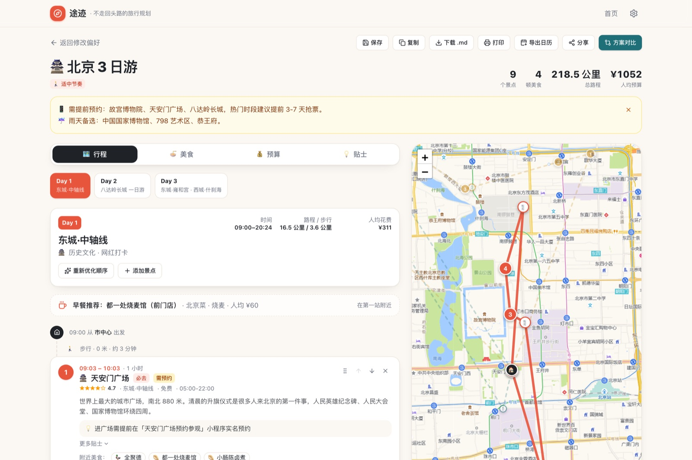
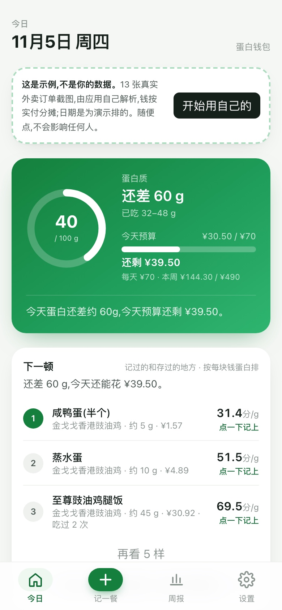
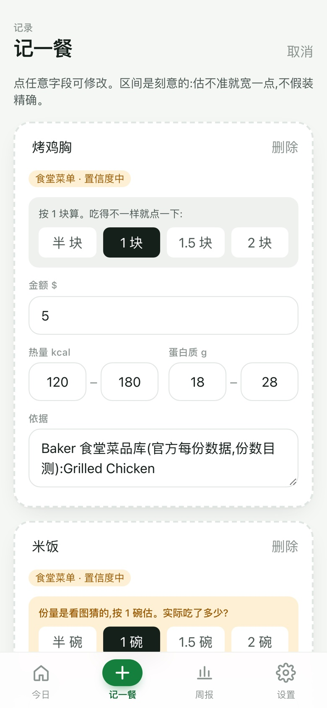
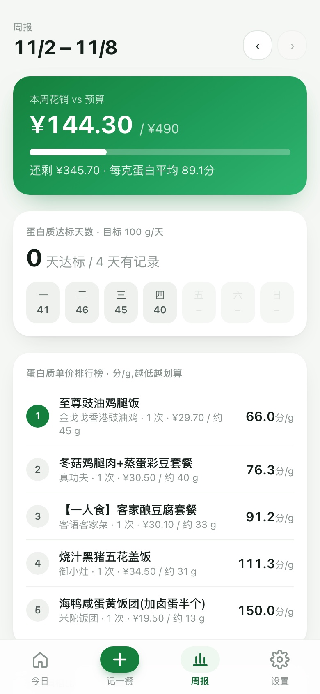
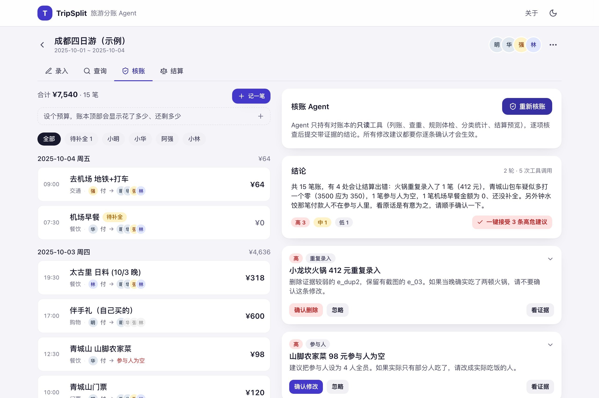

每个项目先说明目标用户、要解决的问题和衡量方式，再按统一的产品流程展开：背景、痛点、需求优先级、方案产出、开发上线、结果与迭代。所有数字均来自运行记录、用户测评或公开数据核对；尚未取得的数据标注为下一步计划。
途迹 Tuji Travel
已上线 · 开源
不走回头路的城市旅行规划工具 · 个人项目 · 2026.09 — 2026.10
说一个城市，得到不走回头路、可直接执行的逐日行程：按地理分天、精确最短路径排序、按开放时间排程、沿途配餐。无需注册，打开就能用。
给谁2–4 天去一座陌生城市的自由行用户，预算有限、想少走冤枉路
解决什么攻略里的景点怎么排顺序：不走回头路、不扑空闭馆、吃得顺路
怎么衡量每套方案的总路程、人均花费、最晚结束时间；下一步测规划耗时与回头路次数
kaikungao.github.io/tuji-travel-planner · 北京 3 日示例

点击后在窗口内加载真实应用，选一座城市、点"开始规划"即可生成行程，拖拽调序、换餐厅、切换方案都能试。新窗口打开 ↗
198内置景点，9 座城市 172 家餐厅，全部通过校验
4.65 / 5107 个用户画像测评均分
−23%省钱方案人均成本（北京 3 日：¥1052 → ¥806）
取舍→分天→排序→排程→配餐
01 · 项目背景和同学复盘做攻略：景点有了，顺序靠人脑拼。反复出现走回头路、闭馆扑空、饭点凑合三类问题；现有攻略产品给的是景点列表和评分，不回答"先去哪、后去哪"。
02 · 痛点挖掘一句话产品承诺："不走回头路"。锁定"2–4 天去一座陌生城市"的自由行用户；核心痛点不在找景点而在排顺序，于是把攻略拆成"取舍→分天→排序→排程→配餐"5 步，每步对应一条可验证的规则。
03 · 需求与优先级需求池 + 价值 / 难度两维排路线图。先做路线引擎与 9 座城市数据，再做拖拽、饮食偏好、多方案对比、分享等 7 项拓展；天气、真实路况、账号等依赖外部服务的明确后置。
04 · 方案产出不画静态原型图，直接做可试用的产品。借助 Claude Code 把方案做成可点击的真实产品给同学用；路线用 k-means 分天 + Held-Karp 最短路径 + 时段偏好排程，AI 只用于生成无内置数据的城市；原则是"算法给初稿、用户有决定权"。
05 · 开发上线数据不过校验不上线。198 个景点、172 家餐厅经校验脚本 0 错误后才注册进应用；自建 Cloudflare 代理让访客免填 Key，按人 / 全站每日限流控成本；GitHub Pages 自动部署，无需注册即可用。
06 · 结果与迭代107 个用户画像测评：均分 4.65 / 5。保存分享、预算决策得分最高，路线排程、餐饮推荐、AI 能力相对偏低；北京 3 日实测省钱方案人均 ¥1052→¥806（−23%）。按反馈增加远郊一日游开关、酒店精确出发点、出行方式对比；归并出 15 项 P0 排入下一版：忌口安全提示、真实交通时间、行程备份与恢复、分享脱敏、AI 生成城市的可信度标识。
蛋白钱包 ProteinWallet
已上线
面向大学生的 AI 饮食记账工具 · 个人项目 · 2026.07 — 2026.08
拍一张餐食或小票，同时记账与记营养。给生活费有限、想增肌的在校大学生回答一个问题：每一美元换到了多少克蛋白质。
给谁生活费有限、想增肌的在校大学生；v1 做美国校园，国内版在路线图
解决什么食堂、连锁、外卖没法称重，营养和钱分在两个 App 里
怎么衡量北极星：周人均记录餐次；评测：区间命中率与宽度；线上：修正率、份量按钮点击率



点"在手机里试用"后，第一部手机内会加载真实应用：写一句"Chipotle 鸡肉碗 $11.5"或选一个食堂拍餐盘，就能看到区间、置信度和依据。新窗口打开 ↗
3 级估算：连锁官方表 → 食堂菜品库 → 模型目测
640 道食堂官方菜品库（芝大 4 个食堂）
4.68 / 576 个用户画像测评均分，61% 打 4 分以上
01 · 项目背景竞品各管一半："吃得健康"和"花得起"分在两个 App。生活费有限又想增肌的在校大学生，三餐多靠食堂、连锁和外卖，无法称重；MyFitnessPal、Keep 等营养 App 靠条目搜索 + 手动克数且不管钱，记账 App 不管营养。
02 · 痛点挖掘每一美元换多少克蛋白质。把大学生饮食重新定义为约束优化问题，自创核心指标蛋白质单价（¢/g），把营养决策变成消费决策，这是与现有产品的根本差异。
03 · 需求与优先级单次记录 ≤10 秒是生死线。MVP 只保留"记录→估算→差额→周报"一个闭环，为此设计拍小票、拍餐食、一句话、自炊双记录 4 种输入；优先把食堂这一最高频场景的估算做准，饮食推荐、热量警告等明确不做。
04 · 方案产出PRD + 三级估算 + "诚实的模糊"。连锁官方营养表 → 学校食堂官方菜品库（640 道菜）→ 模型目测，模型只做识别、算术交给代码；界面统一呈现区间 + 置信度 + 依据，模型对份量没把握时做成一键追问（×0.5 / 1 / 1.5 / 2）。
05 · 开发上线数据来源分级，核实不了的不许叫"官方"。PRD 拆成 4 周 14 个 Step，每步写死验收标准；17 家连锁里只有逐行核对过官网的 5 家能标"官方数据"，9 家未核实的降级为"参考数据·未核实"；借助 Claude Code 开发，上线 Vercel。
06 · 结果与迭代76 个用户画像测评：均分 4.68 / 5，61% 打 4 分以上。预算与性价比得分最高，拍餐盘识别、长期可靠性相对偏低；36% 的反馈要求估算可确认、可修正，据此上线份量一键追问、记录可编辑、"再来一份"。评测区间命中连锁 17/17、食堂 4/4。5 项 P0 集中在照片与小票隐私、数据导出，排入下一版。
TripSplit 旅游分账 Agent
已上线 · 开源
多人自由行 AA 记账与核账助手 · 个人项目 · 2025.09 — 2025.12
一句话、一张支付截图或一段语音就能记一笔；账目由只读的核账 Agent 查重、查漏、查异常，修改建议逐条由用户确认；最后给出最少转账的结算方案。
给谁2–6 人结伴自由行、轮流垫付的小团体；记账的人和付钱的人常常不是同一个
解决什么消费记录分散、垫付关系复杂、参与人容易记错、结算前核对繁琐
怎么衡量录入自动入账率与字段准确率；核账查全率；结算前残留异常数；线上响应时长
tripsplit-jet.vercel.app · 示例账本核账结果

点击后在窗口内加载真实应用，自带一本埋了 5 处异常的示例账本：在「录入」写一句"阿强付的火锅 412，大家 AA"，再到「核账」点开始核账，看 Agent 如何引用证据并给出修改预览。新窗口打开 ↗
3 种录入文字 / 支付截图 / 语音，统一走置信度决策：自动入账或追问补全
5 / 5核账 Agent 找出示例账本全部埋设异常，每条结论引用具体证据
18 / 20录入评测集通过数；金额、付款人、参与人、分类字段准确率 100%
创建旅行→消费录入→账本管理→核账→结算
01 · 项目背景结伴旅行的账，难点不在记，而在记全和算对。消费散在不同人的支付记录里，谁垫付、谁参与每笔都不一样；回来结算时靠聊天记录和记忆核对，漏记、重复记、参与人记错都很常见，现有分账工具只解决"算"，不解决"记"和"核"。
02 · 痛点挖掘把成本拆成两段：记录成本与核对成本。记录成本用多模态录入降低，怎么方便怎么记；核对成本交给 Agent，但边界定死为"只读账目、提出建议、由用户确认修改"，宁可多问一句，也不替用户改账。
03 · 需求与优先级先把一条动线跑通，再谈拓展。PRD 梳理"创建旅行 → 消费录入 → 账本管理 → 核账 → 结算"全流程，逐页写页面交互、业务规则、异常处理与验收标准；MVP 只做录入、检索、核账、结算四件事，云同步、分摊规则、多币种、预算等 10 项列为第二期并排出优先级。
04 · 方案产出模型给判断，代码做算术，用户做决定。录入由多模态模型抽取金额、付款人、参与人并逐字段给置信度，按阈值与字段完整性决定自动入账还是追问；检索把模糊描述解析成日期、金额、成员条件再做语义排序，回答带证据引用和字段级修改预览；核账 Agent 走 Planning → 只读工具调用 → 结构化输出的链路。
05 · 开发上线Agent 在技术上就改不了账。服务端只接收账本快照、只返回建议，没有写接口；核账工具全是快照上的纯函数，结论必须以 submit_findings 严格结构提交。第二期补上 libsql 云同步、每次模型调用的耗时与成本遥测、20 例录入评测集与运营后台；借助 Claude Code 开发，Vercel 上线。
06 · 结果与迭代评测 18 / 20，核账在示例账本上查全 5 处异常。录入评测字段准确率 100%，两例失败是"靠推断得到的付款人该不该追问"的标注边界；线上实测录入 4–6 秒、核账约 30 秒。第二期上线云同步、请客与不均摊、多币种、预算、还款跟踪、批量导入、服务端语音、Agent 规则记忆。